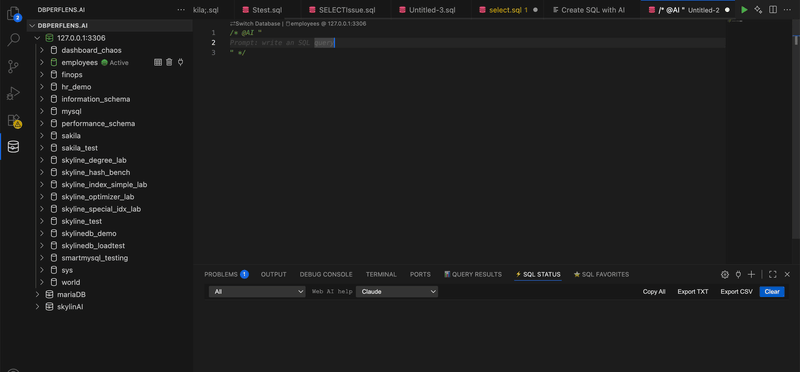
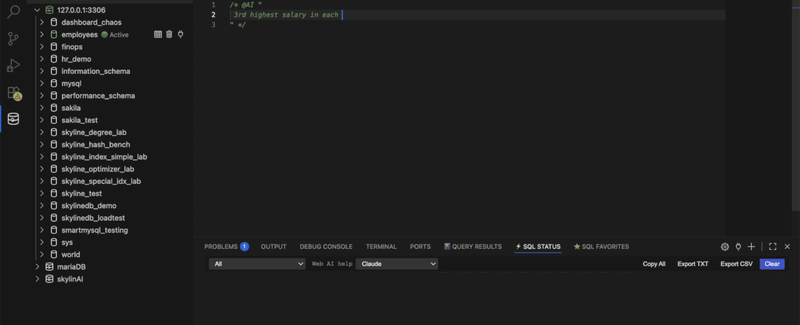

LLMs & AI
Generate, fix and explain SQL using your provider of choice — with control over what schema context is shared.
Overview
SQLLens.AI adds AI affordances throughout: a Generate SQL CodeLens above empty regions, a Fix with AI action on errors, natural‑language prompts via @AI, and an assist panel for longer conversations.
Enable / disable AI
Toggle skyline-mysql.ai.enabled in Settings → AI. When off, AI CodeLens entries disappear and the assist panel is hidden.
Providers & models
Supported providers include OpenRouter, Groq, Grok, OpenAI, Anthropic, Ollama, and any OpenAI‑compatible custom endpoint. Pick a default model per provider; the assist panel lets you switch on the fly.

API keys & accounts
Keys live in VS Code's Secret Storage, never in settings.json. If you've signed in to sqllens.ai, you can opt into managed routing and skip per‑provider keys.
Schema context & privacy
You decide how much table metadata can accompany prompts: see skyline-mysql.ai.schemaContextMode (structure-only vs none) and skyline-mysql.ai.includeSchemaContext (legacy off switch). Row data is never sent to cloud models.
Even with full schema context, only the names and types of objects referenced by the active query are included — not the whole database.
From the editor (CodeLens)
Generate SQL appears on empty regions and turns a comment like -- top 10 customers last month into a query. Fix with AI appears on the gutter when a statement fails.
Command Palette & panel
Run SQL: Ask AI from the palette to open the assist panel. Use @AI explain, @AI optimize, or @AI fix inline.
Create DB objects with AI
Right‑click a database in the tree and choose Create with AI → table, view, procedure or trigger. The wizard previews the DDL before running.
Troubleshooting
- "AI disabled" — enable
skyline-mysql.ai.enabled. - Rate limited — switch provider or wait the cool‑down shown in the panel.
- Connection error — check the endpoint URL and that your network allows it.
Demo
